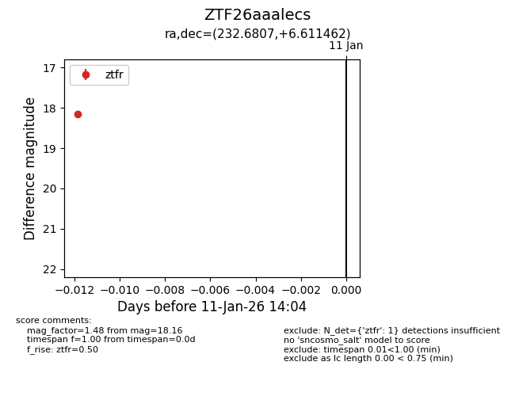
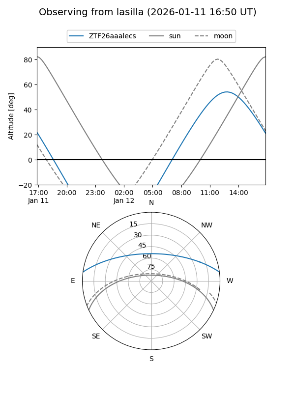
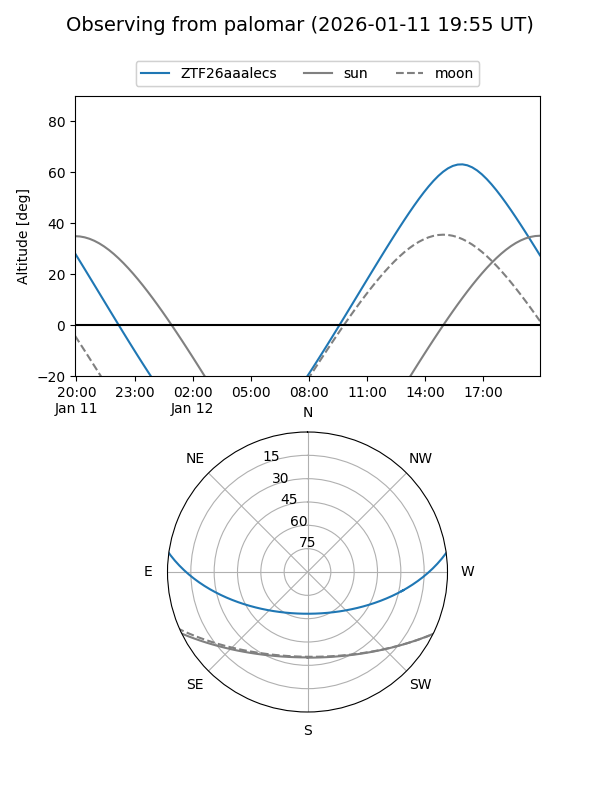

ZTF26aaalecs
Target ZTF26aaalecs at 2026-01-11 14:05
Aliases and brokers:
FINK: link
Lasair: link
ALeRCE: link
alt names
ZTF26aaalecs (ztf,fink_ztf)
Coordinates:
equatorial (ra, dec) = 232.6807,+6.61146
equatorial (HMS+DMS) = 15:30:43.37,+06:36:41.26
galactic (l, b) = (11.8355,+47.01283)
Flags:
Photometry:
last ztfr=18.16
1 ztfr detections
Lightcurve

Visibility


Additional plots